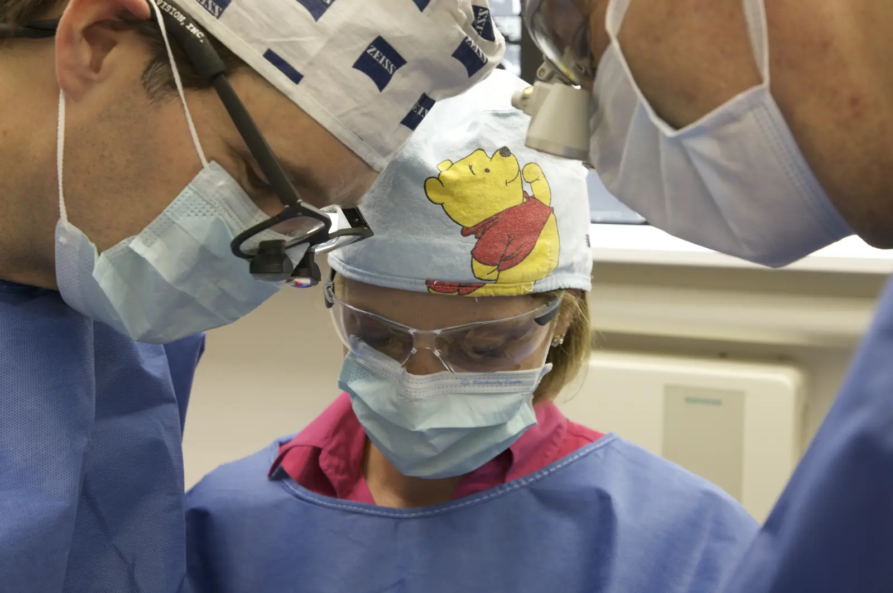

Warum Knochen fehlen kann
Geht ein Zahn verloren, wird der Knochen, der ihn gehalten hat, nicht mehr belastet und baut sich nach und nach ab, vor allem in den ersten Monaten.
Eine Infektion, eine Parodontitis oder das langjährige Tragen einer herausnehmbaren Prothese verstärken diesen Knochenabbau. Im hinteren Oberkiefer ist die Knochenhöhe außerdem durch die Kieferhöhle begrenzt, die direkt über den Zahnwurzeln liegt.
Die dreidimensionale Röntgenaufnahme vor der Behandlung zeigt genau, wie viel Knochen zur Verfügung steht und ob ein Knochenaufbau nötig ist.
Der Knochenaufbau
Dabei wird Knochen oder Knochenersatzmaterial dort eingebracht, wo Knochen fehlt. Das kann körpereigener Knochen sein, der meist an einer anderen Stelle im Mund entnommen wird, oder ein Ersatzmaterial menschlichen, tierischen oder synthetischen Ursprungs; solche Ersatzmaterialien werden heute sehr häufig verwendet. Während der Heilung schützt in der Regel eine Membran den Bereich.
- Gleichzeitig mit dem ImplantatFehlt nur wenig Knochen, wird er beim Setzen des Implantats gleich mit ergänzt. Der Behandlungszeitplan ändert sich dadurch kaum.
- Vor dem ImplantatFehlt viel Knochen, wird zuerst der Knochenaufbau durchgeführt. Das Implantat wird gesetzt, sobald der Knochen gefestigt ist, in der Regel vier bis sechs Monate später.

Der Sinuslift
Die Kieferhöhle ist ein luftgefüllter Hohlraum über den oberen Backenzähnen (Prämolaren und Molaren). Ist der Knochen unter der Kieferhöhle nicht hoch genug, wird beim Sinuslift die Schleimhaut, die die Kieferhöhle auskleidet, behutsam angehoben und darunter Aufbaumaterial eingebracht. So entsteht zusätzliche Knochenhöhe, in der das Implantat anschließend verankert werden kann.
- Über den Kieferkamm (interner Sinuslift)Fehlt nur wenig Knochen, erfolgt der Zugang direkt über das Implantatbett. Das Implantat wird in der Regel in derselben Sitzung gesetzt.
- Von der Seite (externer Sinuslift)Fehlt mehr Knochen, wird seitlich im Kieferknochen ein kleines Fenster geöffnet. Das Implantat wird in derselben Sitzung oder nach sechs bis neun Monaten Einheilzeit gesetzt.
Wie viel Zeit kommt hinzu?
| Situation | Zusätzliche Zeit bis zur Implantation |
|---|---|
| Knochenaufbau gleichzeitig mit dem Implantat | Keine, die Einheilung kann aber etwas länger dauern |
| Interner Sinuslift (krestal) | In den meisten Fällen keine |
| Knochenaufbau vor dem Implantat | Vier bis sechs Monate |
| Externer Sinuslift (lateral) in zwei Schritten | Sechs bis neun Monate |
Richtwerte; sie werden bei der Planung an den jeweiligen Fall angepasst.
Nach dem Knochenaufbau
Der Heilungsverlauf ähnelt dem nach einer Implantation, oft mit etwas stärkerer Schwellung. Nach einem Sinuslift sollten Sie etwa zwei Wochen lang nicht kräftig schnäuzen und nicht fliegen. Niesen Sie mit offenem Mund.